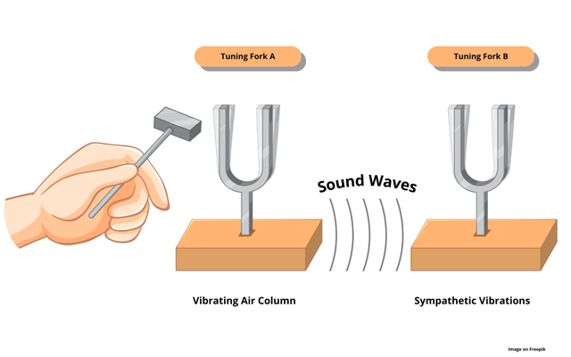
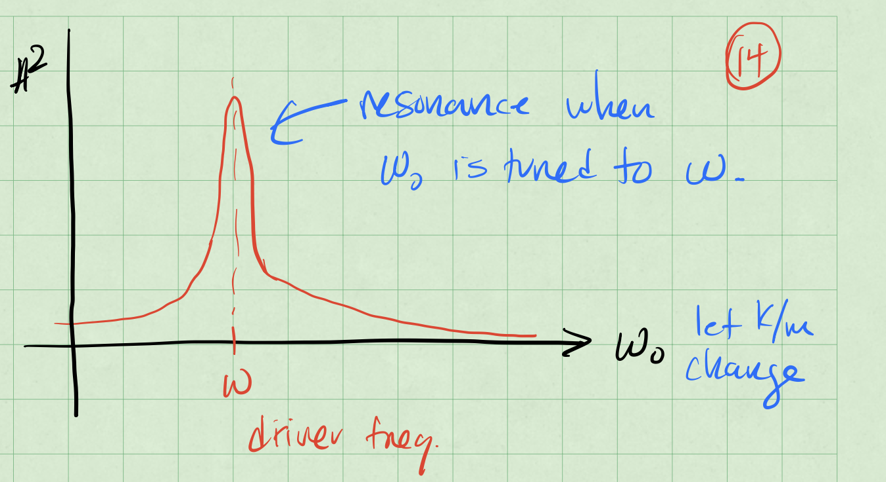

Day 25 - Resonance + Homework Session#

Reminders#
We started to solve the forced harmonic oscillator equation:
We examined the case of a sinusoidal driving force:
There’s a complimentary case where the driving force is a sine wave:
Reminders#
We combined the two equations into a complex equation using these identities:
The resulting equation is:
Notice that there’s a homogeneous part (\(z_h\)) and a particular part (\(z_p\)).
Reminders#
The homogeneous part is the solution we’ve found before with the general solution:
where \(r = -\beta \pm i \sqrt{\omega_0^2 - \beta^2}\). In the case of a weakly damped oscillator (\(\beta^2 < \omega_0^2\)), we have:
These solutions die out as \(t \to \infty\). They are called transient solutions.
Solving the particular part#
The particular part is the solution to the driven harmonic oscillator equation:
Assume a sinusoidal solution (frequency, \(\omega\)) of the form: $\(z_p(t) = C e^{i \omega t}\)$
where \(C\) is a complex number. Then, we have:
Amplitude of the particular solution#
We want to convert this to polar form:
where \(A\) and \(\delta\) are real numbers. We use the complex form to compute the magnitude of the amplitude:
Clicker Question 24-5#
We found that the square amplitude of the driven harmonic oscillator is:
When is the amplitude of the driven oscillator maximized?
When the driving frequency (\(\omega\)) is far from the natural frequency (\(\omega_0\))
When the driving frequency (\(\omega\)) is close to the natural frequency (\(\omega_0\))
When the damping (\(2\beta\)) is weak
When the damping (\(2\beta\)) is strong
Some combination of the above
Finding the phase#
With,
then we can compare the complex forms:
Both \(f_0\) and \(A\) are real numbers, so the phase \(\delta\) is the same phase as the complex number:
The Particular Solution#
Let’s return to the particular solution:
So we get solutions to both driven oscillators:
These are the steady-state solutions.
They persist as \(t \to \infty\) and oscillate at the driving frequency \(\omega\).
The Full Solution#
Here, \(x_h(t)\) is the transient solution and \(x_p(t)\) is the steady-state solution.
For weakly damped oscillators, the transient solution can be written in the form:
where \(A_{tr}\) and \(\delta_{tr}\) are real numbers and are the amplitude and phase of the transient solution. Both are determined by the initial conditions.
where \(A\) and \(\delta\) are real numbers and are the amplitude and phase of the steady-state solution.
The Full Solution#
The transient plus the steady-state solution is the full solution:
As \(t \to \infty\), the transient solution dies out and the steady-state solution persists.
where
Resonance#
The amplitude of the steady-state solution is:
We change \(\omega_0\) and observe how the amplitude changes.

Achieving resonance#
The denominator of the equation controls the amplitude:
Case 1: Tune \(\omega_0\) to be close to \(\omega\). Car Radio tuning
With \(\omega_0 = \omega\), the amplitude is:
Achieving resonance#
The denominator of the equation controls the amplitude:
Case 2: Tune \(\omega\) to be close to \(\omega_0\). Pushing a swing
Find the \(\omega\) that maximizes the amplitude by taking the derivative with respect to \(\omega\):
HW6 Exercise 2 Morse Potential as an SHO#
If the potential has a local minimum, we can often find SHO approximation for that potential near the local minimum.
The Morse potential is a convenient model for the potential energy of a diatomic molecule. The potential is a radial one and thus one-dimensional. It is given by,
where the distance between the centers of the two atoms is \(r\), and the constants \(A\), \(R\), and \(S\) are all positive. Here \(S<<R\).
2a (2pt) Sketch (or plot) the potential as a function of \(r\).
HW6 Exercise 2 Morse Potential as an SHO#
2b (3pt) Find the equilibrium position of the potential, i.e. the position where the potential is at a minimum. We will call this \(r_e\).
2c (3pt) Rewrite the potential in terms of the displacement from equilibrium, \(r = r_e + x\). Expand the potential to second order in \(x\).
2d (2pt) Find the effective spring constant, \(k\), for the potential near the minimum. What is the frequency of small oscillations about the minimum?
HW6 Exercise 4, Toy Potential#
Consider a toy potential of the form,
where \(U_0\), \(R\), and \(\lambda\) are all positive constants and the domain of the potential is \(0<r<\infty\).
4a (2pt) Sketch (or plot) the potential as a function of \(r\).
HW6 Exercise 4, Toy Potential#
4b (3pt) Find the equilibrium position of the potential, i.e. the position where the potential is at a minimum. We will call this \(r_e\).
4c (5pt) Rewrite the potential in terms of the displacement from equilibrium, \(r = r_e + x\). Expand the potential to second order in \(x\). What is the effective spring constant, \(k\), for the potential near the minimum? What is the frequency of small oscillations about the minimum?